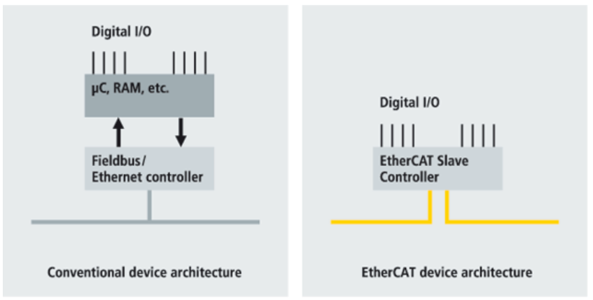

The MPLAB Harmony EtherCAT Stack demonstrates the implementation of a EtherCAT slave node which is capable of demonstrating Process Data Object Trigger and Counter and doing Firmware Upgrade via FoE (File over EtherCAT).Use of the Microchip EVB-LAN9252_SAMD51 (and similar EtherCAT interface devices) requires use of the Beckhoff EtherCAT Slave Stack Code (SSC) and its associated configuration and code generation tool. To integrating this EtherCAT HW and SW with a Microchip 32-bit MCU or MPU, the peripherals and middleware are used from the MPLAB Harmony 3 framework and the MPLAB Harmony Configurator (MHC). This document presents a brief analysis of what will be required to support this integration.
What is EtherCAT?
Ethernet for Control Automation Technology (EtherCAT) was developed by Beckhoff. EtherCAT is a fast and deterministic network, and processes data using dedicated hardware and software. It uses a full duplex, master-slave configuration.

1> EtherCAT supports Free Run , Synchron Synchronization and Distributed clock synchronization mode .
2> EtherCAT also supports firmware upgrade using File Over EtherCAT ( FoE) feature.
|
EtherCAT Library Help
|